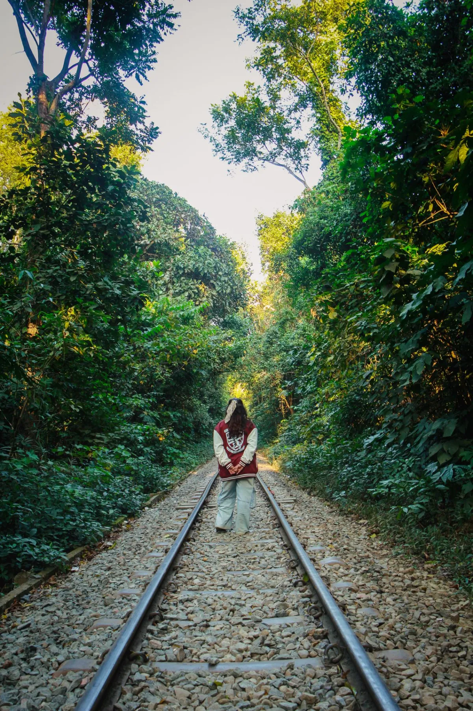

Region · Tea country
Sylhet & Srimangal
Tea-carpet hills, wetlands and rainforest — the greenest, gentlest corner of the country, and the easiest place to slow right down.

Most travellers say "Sylhet" but mean Srimangal — the tea capital a few hours short of Sylhet city, and the base you actually want. Rolling estates, a rainforest full of gibbons, and a freshwater swamp forest you row through: it's the country's soft landing.
What to do
- Tea estates & seven-layer tea. Walk the estates at golden hour, then try Srimangal's famous seven-layer tea in a roadside cabin.
- Lawachara National Park. A guided morning walk for hoolock gibbons and birdlife in patchy rainforest.
- Ratargul swamp forest. A rowboat through Bangladesh's freshwater swamp forest — at its best when the water is high.
- Madhabpur Lake & a factory tour. A calm lake among the estates, and a look inside a working tea factory.
How long to plan
Two days is enough for the estates and one big outing; three lets you fit Lawachara and Ratargul without a rushed schedule.
Getting there
From Dhaka, take the scenic overnight train to Sylhet (around 6–7 hours) or a short flight, then continue to Srimangal. It's the classic pairing with a Dhaka city leg for a relaxed first week.
Fixed price, meet you at arrivals

Price the tea hills
Opens the planner with Dhaka + Sylhet.